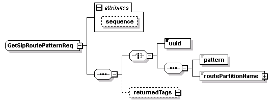
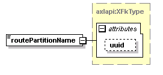
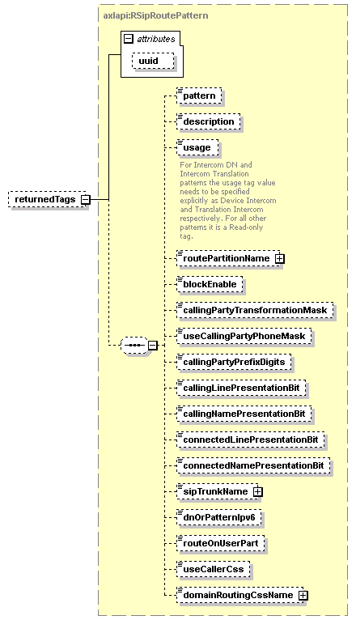

| diagram |  | ||||||||||||
| namespace | http://www.cisco.com/AXL/API/10.5 | ||||||||||||
| children | uuid pattern routePartitionName returnedTags | ||||||||||||
| used by |
|
||||||||||||
| attributes |
|
||||||||||||
| source | <xsd:complexType name="GetSipRoutePatternReq"> <xsd:sequence> <xsd:choice> <xsd:element name="uuid" type="axlapi:XUUID"/> <xsd:sequence> <xsd:element name="pattern" type="xsd:string" nillable="false" minOccurs="1" maxOccurs="1"/> <xsd:element name="routePartitionName" type="axlapi:XFkType" nillable="true" minOccurs="1" maxOccurs="1"/> </xsd:sequence> </xsd:choice> <xsd:element name="returnedTags" type="axlapi:RSipRoutePattern" minOccurs="0"/> </xsd:sequence> <xsd:attribute name="sequence" type="xsd:unsignedLong" use="optional"/> </xsd:complexType> |
attribute GetSipRoutePatternReq/@sequence
| type | xsd:unsignedLong | ||
| properties |
|
||
| source | <xsd:attribute name="sequence" type="xsd:unsignedLong" use="optional"/> |
element GetSipRoutePatternReq/uuid
| diagram |  |
||||||
| type | axlapi:XUUID | ||||||
| properties |
|
||||||
| facets |
|
||||||
| source | <xsd:element name="uuid" type="axlapi:XUUID"/> |
element GetSipRoutePatternReq/pattern
| diagram | |||||
| type | xsd:string | ||||
| properties |
|
||||
| source | <xsd:element name="pattern" type="xsd:string" nillable="false" minOccurs="1" maxOccurs="1"/> |
element GetSipRoutePatternReq/routePartitionName
| diagram |  | ||||||||||||
| type | axlapi:XFkType | ||||||||||||
| properties |
|
||||||||||||
| attributes |
|
||||||||||||
| source | <xsd:element name="routePartitionName" type="axlapi:XFkType" nillable="true" minOccurs="1" maxOccurs="1"/> |
element GetSipRoutePatternReq/returnedTags
| diagram |  | ||||||||||||
| type | axlapi:RSipRoutePattern | ||||||||||||
| properties |
|
||||||||||||
| children | pattern description usage routePartitionName blockEnable callingPartyTransformationMask useCallingPartyPhoneMask callingPartyPrefixDigits callingLinePresentationBit callingNamePresentationBit connectedLinePresentationBit connectedNamePresentationBit sipTrunkName dnOrPatternIpv6 routeOnUserPart useCallerCss domainRoutingCssName | ||||||||||||
| attributes |
|
||||||||||||
| source | <xsd:element name="returnedTags" type="axlapi:RSipRoutePattern" minOccurs="0"/> |
XML Schema documentation generated by XMLSpy Schema Editor http://www.altova.com/xmlspy